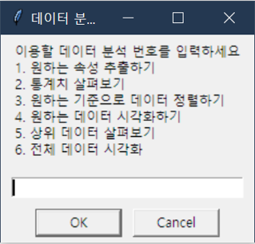

SECON 2025
25.03.21

Overview
- 보안 지식이 부족한 상태로 참관을 해서 그런지 어려운 개념이 많았다. 하지만 설명해주시는 분들께서 개념과 보안 트렌드를 자세히 설명해주셔서 유익한 참관이 되었다. 설명을 듣던 중 보안 트렌드를 발표하는 ‘가트너’의 존재를 알게되었다. 앞으로 보안 트렌드를 정리할 때 꼭 참고하고 해당 기사에서 모르는 개념이 나올 때마다 정리하면 공부에 도움이 될 것 같다.
- 올해 트렌드는 XDR로 EDR이나 NDR같은 것들을 통합 관제센터 역할을 하는 것으로 보면 된다고 했다. 조금 늦게 가서 많은 기업을 보진 못했다. 참관 기업으로는 안랩과 로그프레소, 위즈가 있다. 이 외에는 부스 내부에 있는 내용을 보여 타 기업들의 보안적 관점을 확인하였다.
- 보안 엑스포를 갔다온 이후 본 다양한 개념과 종류 중에서 물리적 보안과 XDR에 대해 관심을 가지게 되었다. 추후 이와 관련된 발표를 준비하는 것도 좋을 것 같다.